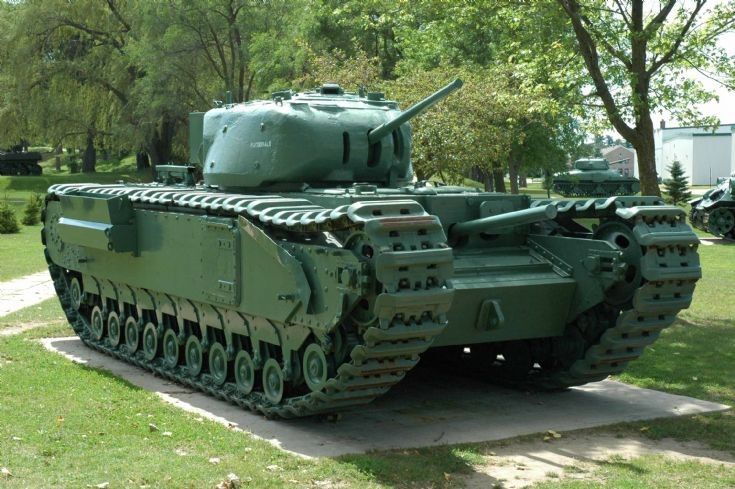
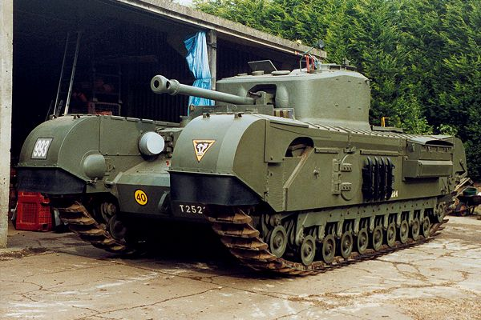

British Tanks in WW2
Hope you enjoy your stay
Churchill Tank
1941-1952
Probably one of the most iconic if not arguably the most iconic tank the British had at it's disposal in World War Two.
When the tank was designed they thought that the war in Europe would be similar to World War One and was intended as an infantry support tank.
This meant not only did it have to be sturdy to deflect small arms fire (for example machine gun fire) but also it had to navigate through difficult terrain
As a result it has relatively thick armour and as a result was very heavy, couple this with an underpowered engine and it ended up capable of taking a beating but very slow
There were many variants made as they ironed out flaws and upgraded it to deal with new enemy tanks such as the Tiger and Panther. This resulted in the tank becoming slower as more armour was added on to deal with enemy tanks increased firepower
| Model Variant | Turret armour thickness | Frontal armour thickness | Top speed |
|---|---|---|---|
| MkI | 88.9mm | 25.7kmph | |
| MkVII | 152.4mm | 20kmph | |
| Black Prince (Prototype) | 240mm | 20kmph |
The tank was unfortunately not suited to World War Two, not only because it was designed to be crossing trenches and chugging through ground shaped by shelling, but because it was too immobile to be effective at what tank warfare had evolved into.
The series of tank was almost scrapped in favour of entirely focusing on the Cromwell tank due to speed impacting military campaigns until it was saved thanks to the Second Battle of El Alamein in October 1942.
Embedded below is an informative video on the Churchill MkVI and MkVII.
Images
Churchill Mark 1 tank
Churchill Mark 7 tank